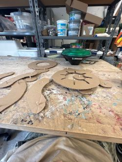
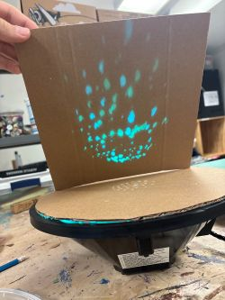
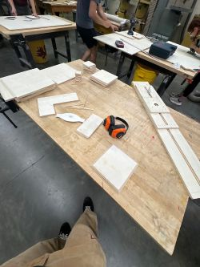
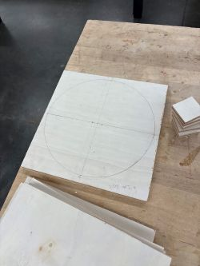
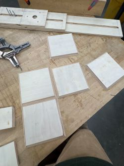
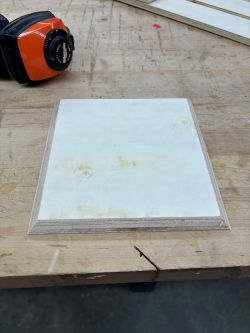
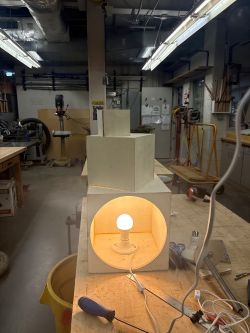
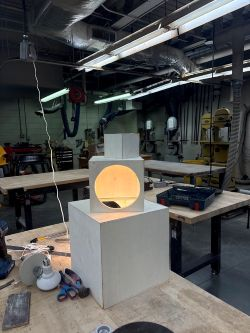

In Progress
The art that is in progress the month is grain and glow im working with a green light from a traffic light and I have to make a non objective lamp with that here are some photos

My idea for this project was to have what's called an iris aperture. It works just like a camera aperture, and the goal was to project a cool effect on the surface it was pointed at. It did work; however, I scrapped this idea because it didn't have the same effect I wanted when I was experimenting.
I then moved on to a pin-hole idea. The only problem with this was that the light is so focused in the middle, it is hard to get the effect to go far. I have to go back to the class this weekend and see if I can figure out what I can do, so I can be ready for my second shop class on Friday.


This is what I have done so far and what I have been working on displyed by the imges below. I wanted to go for the repating box look its suposed to be noo-ojective but I like to think it looks a trafic light and I like the way it look.





